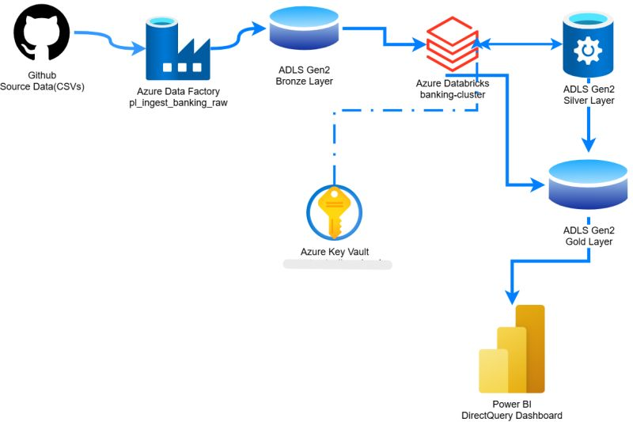

For way too long, my mental model of Databricks was "managed Spark, but someone else handles the cluster." That's it.
Then I built a retail banking analytics platform from scratch, and the problem I was solving looked like this:
- 50K transaction records and 5K customer profiles sitting across 3 different source systems
- No single view of the customer
- Reporting that took 4 days because data had to be manually pulled, reconciled, and exported
- An ML team flagging anomalous accounts off a batch export nobody fully trusted
That's when it actually clicked.
Databricks isn't a fifth tool you bolt onto that pile. It's the thing that replaces the pile.
- Delta Lake → one actual copy of the data with MERGE upserts and schema evolution. No more drifting exports.
- Unity Catalog → RBAC enforced at the table level. One place permissions live.
- Databricks Workflows → the ADF ingestion, the PySpark transformations, the Isolation Forest anomaly model, and the Power BI dashboard all running against that same copy, under that same governance layer.

The actual pipeline — one governed copy of the data, start to finish.
The result?
I didn't believe the "unified platform" pitch until I built the thing myself and watched it actually work.